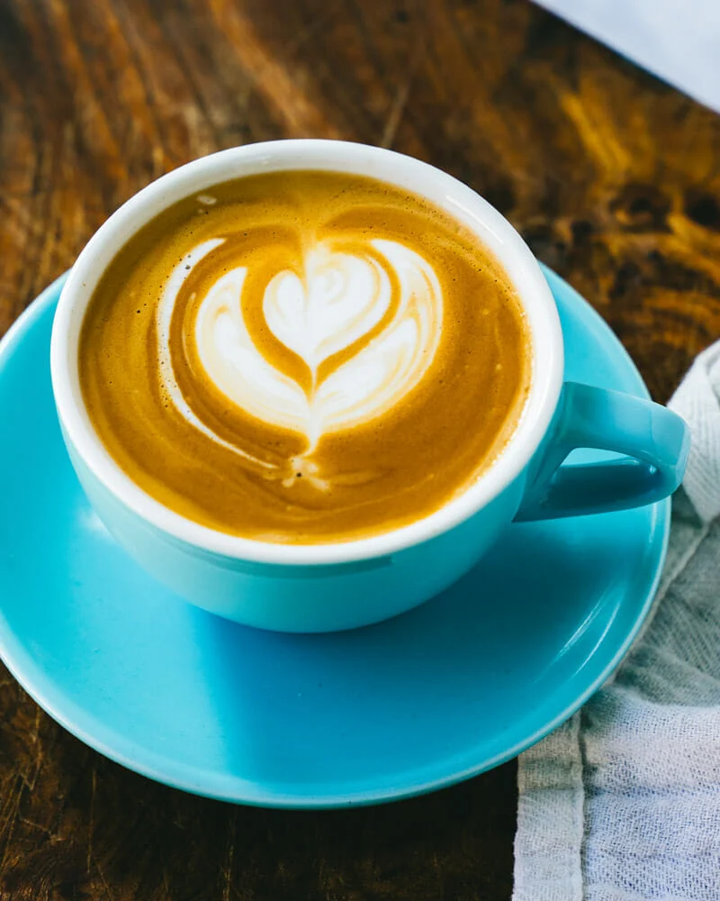
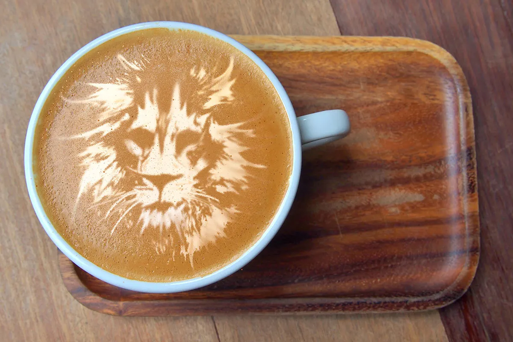
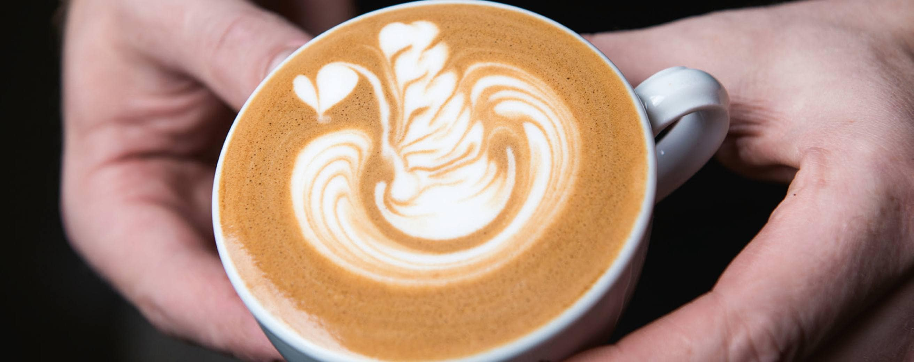
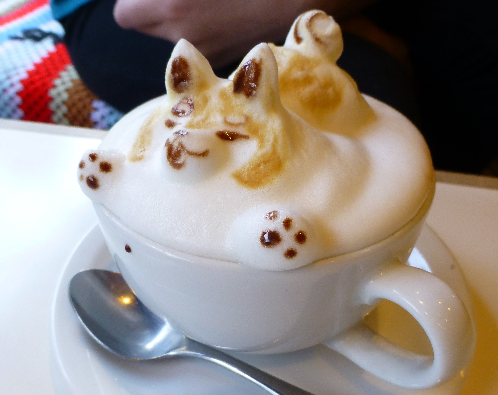
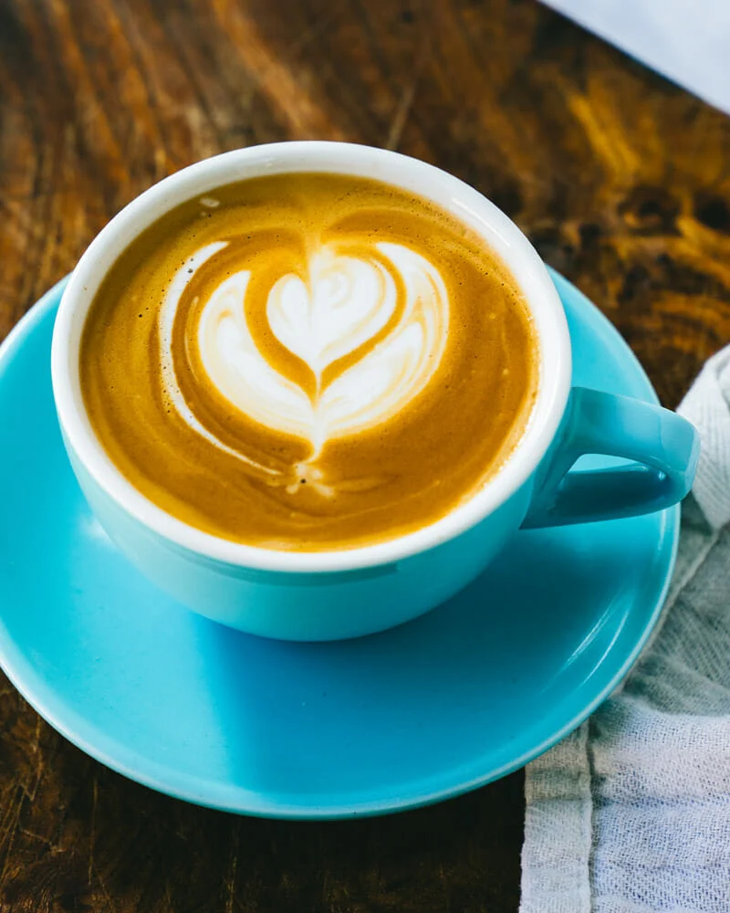
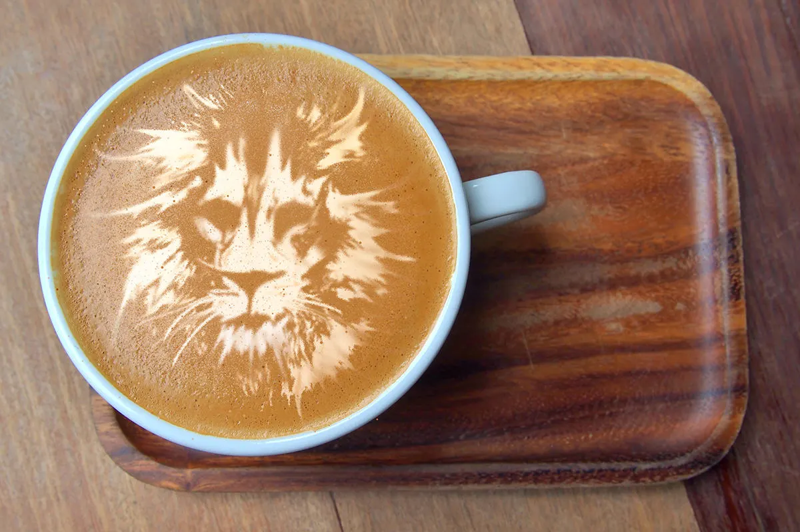
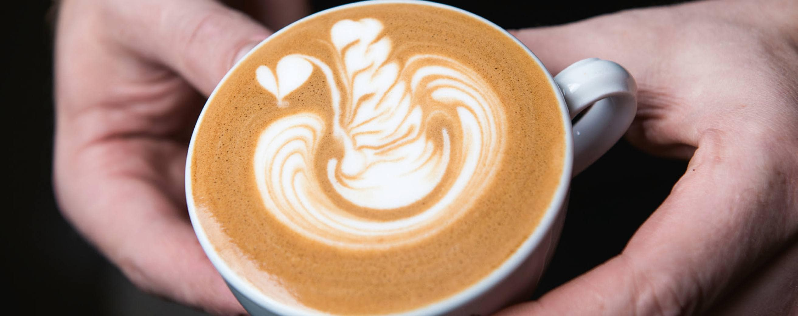
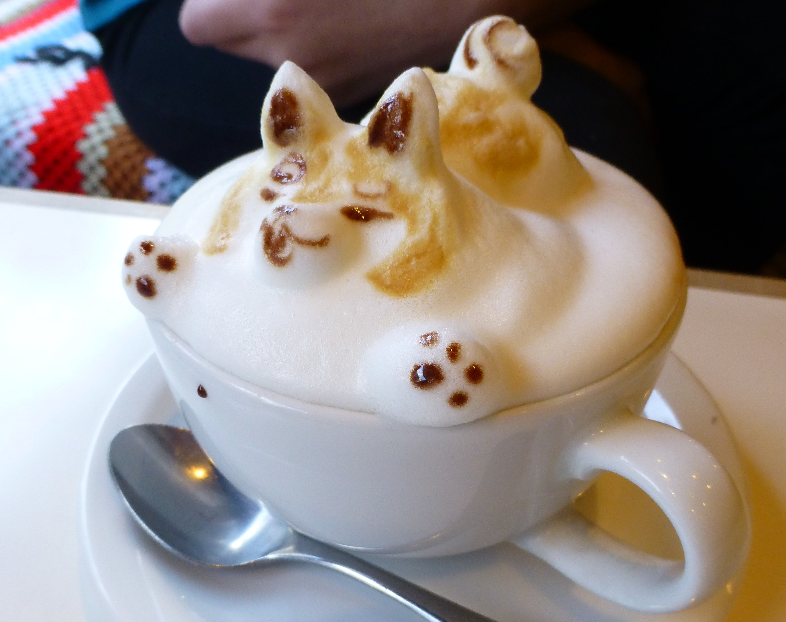

Coffee Bean Type
Aug 28 Ethan Caldwell
Coffee beans come in two main types: Arabica and Robusta. Arabica
beans are the most popular type, and are known for their smooth,
sweet flavor. Robusta beans are less expensive, and have a
stronger, more bitter flavor. Coffee blends often contain a mix of
Arabica and Robusta beans to achieve a well-rounded taste.
Each type of bean brings its unique characteristics, allowing
coffee enthusiasts to explore a diverse range of flavors and
aromas. Whether you prefer the delicate nuances of Arabica or the
boldness of Robusta, understanding coffee bean types can elevate
your coffee-drinking experience to new heights.
read
more
3 Delicious Coffee Recipes
Feb 19 Natalie SullivanExperience the delight of a creamy caramel macchiato and the refreshing indulgence of a mocha mint iced coffee.
read more
Coffee Benefits
Apr 15 Benjamin AndersonModerate coffee consumption offers cognitive enhancement, mood-boosting effects, disease risk reduction, and improved physical performance.
read more


3 Best Espresso Maker
Jan 5 Benjamin AndersonTop-notch espresso makers deliver rich flavors, convenient brewing, and café-like perfection, enhancing your coffee experience.
read
more

Coffee Brewing Methods
Mar 2 Ethan CaldwellTop-notch espresso makers deliver rich flavors, convenient brewing, and café-like perfection, enhancing your coffee experience.
read
more

Coffee & Productivity
Dec 28 Natalie SullivanTop-notch espresso makers deliver rich flavors, convenient brewing, and café-like perfection, enhancing your coffee experience.
read
more

The Science of Roasting
July 15 Jason PortmanTop-notch espresso makers deliver rich flavors, convenient brewing, and café-like perfection, enhancing your coffee experience.
 






